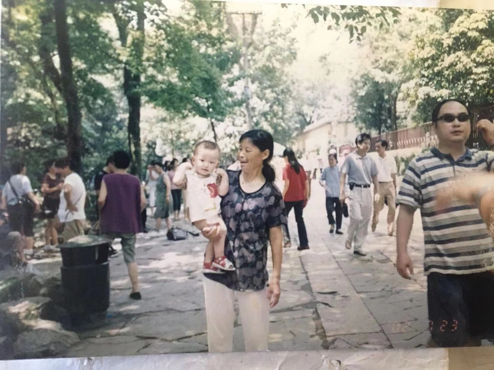

~ ~ ~ ~tell you a secrete, did't have a phone until I was 18~ ~ ~ ~
I was born in Zhejiang on 2001. My family was quite poor at that time and even when I was born, my parent did't have their own house. Therefore,the first couple of years in my life was spent with my grandmom. Look at us!
Then I just had a normal life in my primary school, I was always top 5 student in my class. Things change when I went to junior high school.
To be honest, I myself could not imagine I had a chance to get into the best junior high school in my place. Since this is the best junior high school, I never became top 250 students in my school while there are 340 students in total. The worst thing was, we need to go to school on each Saturday, which means start from my age 13, I only have one day to take a break each week. However, I took after school classes on that day, which makes me seldom have time to do things other than study.
Accidently, 3 years later, I got good grade in my senior high school entrance examination, which leads me to the top 3 senior high school in Zhejiang province
Again, I had a hard time in study. All the students only cares about their study. Thanks to my junior high school, I find it easy to accept my high school also only have one day to take a break each week. Even though study was so boring, but I still makes a lof of true friend. Therefore, I really enjoy my life in my high school. Here is a video of my senior high shool song.
After my high school study, I came to USA for College.
My first 2 years was spent in LosAngelous. My school was SMC. I found it quite easy taking classes here since I learned most of math in China. That was a easy time for me. I finally have time to play around!
Then the Covid-19 appeard in 2020. I really hate that time because we should stay at home in order not to get sick. Boring time spent at home all day long and only mobile games and movies.
Luckily, I transfered to UCSD in 2021. So glad that my dream was finally come ture. Until now, I am still studying in UCSD.